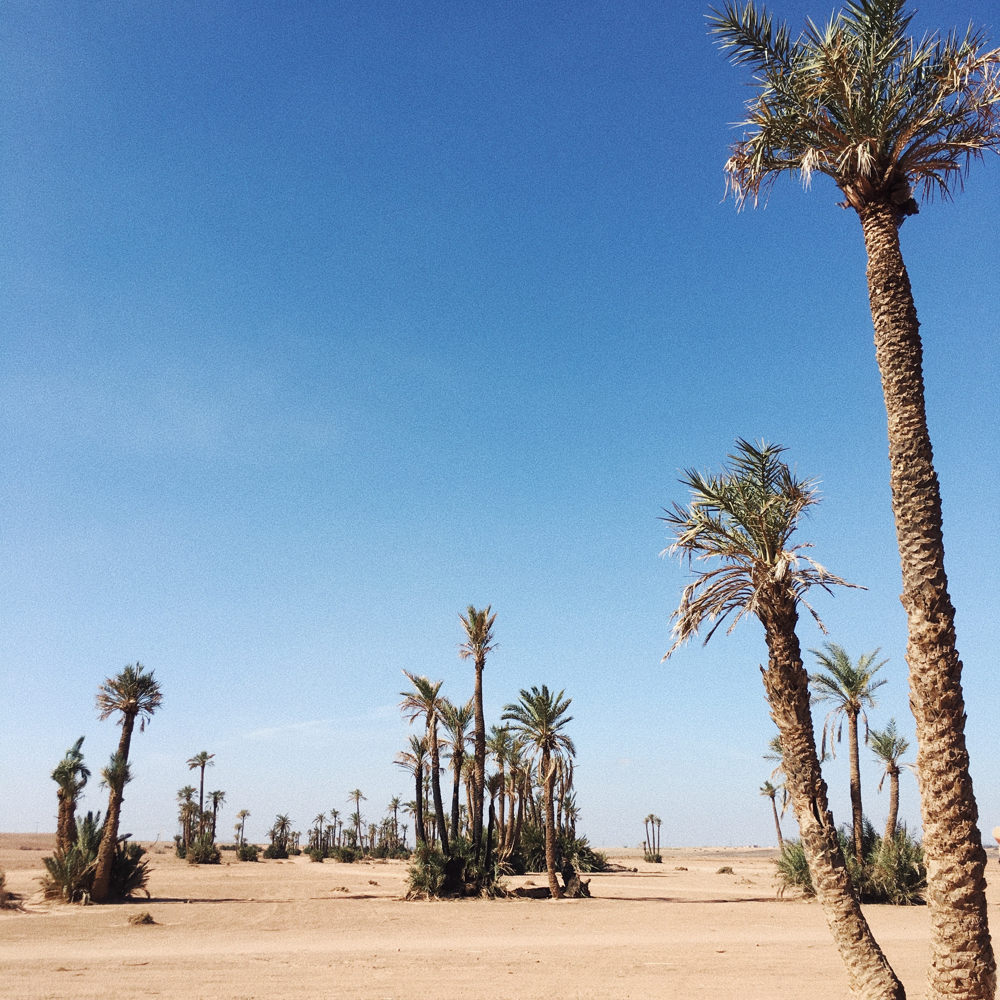
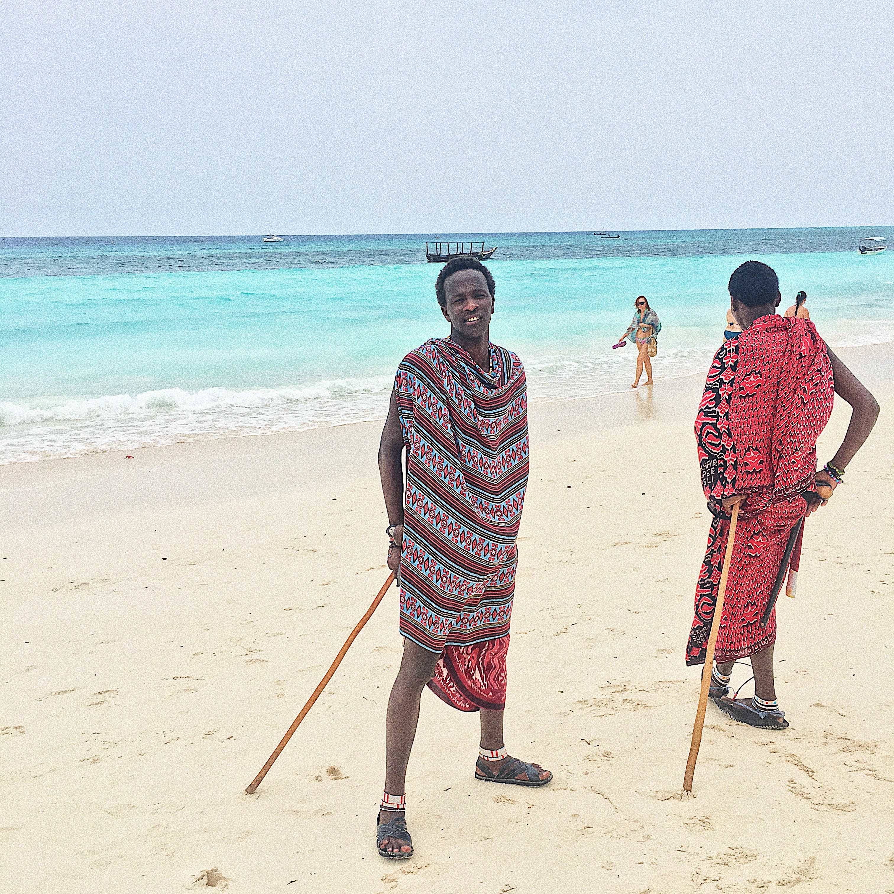
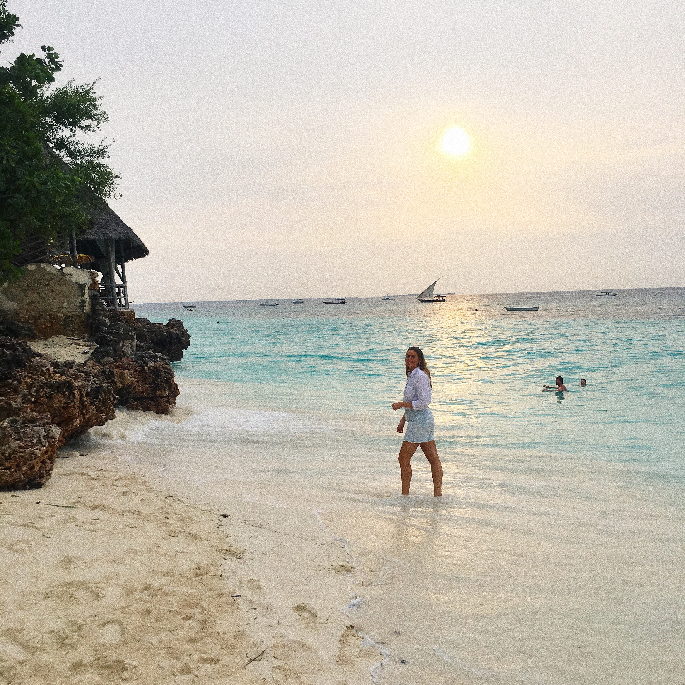

BON
VOYAGE

Det er jo dyrt at rejse?
Mange af mine venner og familie undrer sig meget over, hvordan jeg kan rejse så tit som jeg gør. De forstår ikke hvordan jeg kan have råd til det, da de umiddelbart forbinder det at rejse, med at bruge en masse penge, men sådan behøver det slet ikke at være. Derfor har jeg prøvet at samle en masse gode tips og tricks til hvordan man kan rejse billigt. Denne guide gælder ikke for de helt almindelige charterrejser, som vi alle kender, men rejser til de mere specielle destinationer.
I Januar, i år hvor en veninde og jeg tog til Zanzibar, havde vi et lidt stramt budget. Vi have ca. 20 dage fri, så vi tænkte med det samme, at det var chancen, for at pakke kufferten og hoppe på et fly så vi kunne krydse endnu et punkt af på vores Bucket List.
Vi surfede en del rundt på nettet og fandt så frem til et par flybilletter på Momondo, til en overkommelig pris. Flybilletterne koste omkring 4000 kr. pr. person, hvilket jo er ret billigt. Vi undersøgte så priserne på transport, overnatning og mad på Zanzibar, og det viste sig, at det faktisk kunne gøres ret billigt at rejse rundt her.
Det skal lige siges, at vi ikke er særlig kræsne hvad angår hostels, men vi endte egentlig med at bo nogle ret så fine steder. Stort set alle hostels og hoteller på Zanzibar ligger jo på de pæneste strande man kan forestille sig, og vi vidste jo godt, at vi ikke kom til at være særlig meget på vores hotel, men kun for at sove.
Så hvis man er villig til at gå lidt ned i kvalitet og bruge lidt tid på research, så kan man sagtens få en spændende rejse, for knap så mange penge. Rejsen løb ca. op i 7-8000 kr. med alt, for 17 dage på en af verdens smukkeste øer.



Top 10 gode rejsetips
1. Du kan selvfølgelig være heldig og finde en billig afbudsrejse, men ellers handler det om at sænke dine standarter lidt på komforten. Man kan simpelthen ikke rejse billigt hvis man kun er villig til at bo på luksushoteller. Så skal man hvert fald være yderst heldig, og jeg er ikke just den heldige type.
2. Husk at regn alt med i prisen når du betiller din rejse. Både bagage, mad, transport osv.
3. Undgå for guds skyld pakkerejser. Det billigste er langt de fleste gange hvis du booket fly og hotel hver for sig.
4. Tjek altid efter hoteller eller hotels på AirBNB. Det har jeg kun haft gode oplevelser med, og det er både en rigtig billig og god løsning.
5. Hvis du kan, så se om du kan nøjes med håndbagage. Det er både meget nemt nemt og billigt.
6. Sørg for ikke at gå efter ’det første og det bedste’, men forhør dig i stedet forskellige steder, og prøv at se om du kan forhandle dig frem til en rimelig pris.
7. Et godt tip er, hvis du er villig til at leje den bolig ud på fx AirBNB mens du er væk. Det er en god måde hvorpå du kan tjene lidt penge mens du er væk.
8. Vælg hvor DU vil prioritere at bruge penge. Vil du spise ude til hvert måltid eller lave maden selv? Vil du flyve med Emirates eller Norwegian? Vil du bo på luksushoteller eller kan du overleve med billige hostels? Når man bare skal sove der, behøver vi ikke at bo på luksushoteller, bare der er rent, rart og sikkert.
9. Køb mindre måltider i fx lokale boder og butikker.
10. Mit aller vigtigste tip:
Se at komme afsted. Det er nu, mens du er ung, at du kan gøre det, og du vil ikke fortyde det et eneste sekund! God tur.